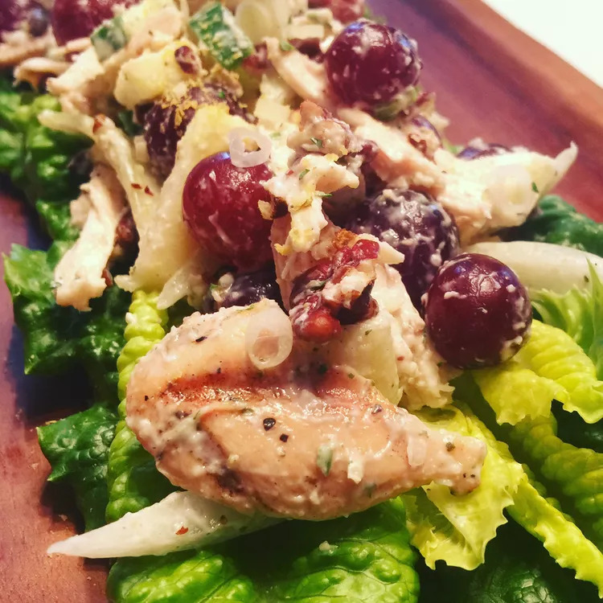

Chicken Salad with Apples, Grapes, and Walnuts

Description
This chicken salad with apples gets extra crunch from walnuts and a subtle sweetness
from grapes. I had chicken breasts left over from a BBQ but I couldn't find a recipe
I liked, so I played around and came up with this.
Ingredients
- 4 cooked chicken breasts, shredded
- 2 medium Granny Smith apples, cut into small chunks
- 2 cups chopped walnuts, or to taste
- ½ red onion, chopped
- 3 stalks celery, chopped
- 3 tablespoons lemon juice
- ½ cup vanilla yogurt
- 5 tablespoons creamy salad dressing (such as Miracle Whip®)
- 5 tablespoons mayonnaise
- 25 seedless red grapes, halved
Steps
- Toss together chicken, apples, walnuts, red onion, celery, and lemon juice in a large bowl.
- Whisk together yogurt, salad dressing, and mayonnaise in a small bowl; pour over chicken mixture and stir to coat. Gently fold in grapes.